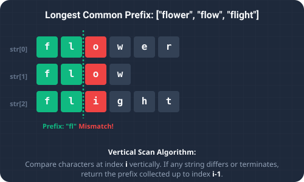

Introduction & Problem Explanation
The Longest Common Prefix problem asks us to find the longest string of characters that is a prefix of all strings in a given array of strings. If there is no common prefix, we return an empty string "".
For example, given the input array ["flower", "flow", "flight"], the longest common prefix is "fl". If the input is ["dog", "racecar", "car"], there is no common prefix, so the output is "". Finding common prefixes is widely used in text search suggestions, command autocompleters, and IP routing tables.

Imagine you have a large folder of words. You decide to arrange them in alphabetical order. In an alphabetically sorted list, the first word and the last word represent the extreme opposites of the set. Consequently, any common letters that are shared by *all* the words in the list must, by definition, be shared between the first and last words as well. By sorting the list alphabetically and comparing *just* the first and last words, we can find the common prefix immediately, without having to inspect all the middle words!
The Algorithmic Approach
1. Horizontal Scanning (O(n * m))
We take the first string as our initial prefix candidate. We compare it with the second string, shortening the candidate until it matches. Then, we compare the result with the third string, and so on. While simple, this requires comparing many words repeatedly.
2. Vertical Scanning (O(n * m))
We compare characters column-by-column across all strings, starting at index 0. The moment we find a mismatch or reach the end of any string, we return the prefix up to that column index.
3. Sorting First and Last (O(n log n * m) Time, O(1) Space)
This is a highly elegant approach. We sort the array alphabetically. The strings at the boundaries, strs[0] and strs[strs.length - 1], will be the most different. We then iterate and compare characters of only these two strings from left to right. The matching sequence is the longest common prefix for the entire array.
Step-by-Step Execution Walkthrough
Let's trace the boundary sorting algorithm on the array strs = ["flower", "flow", "flight"]:
- Step 1 (Base Case Check): We check if the array is null or empty. It is not.
- Step 2 (Sorting): We sort the array alphabetically:
["flower", "flow", "flight"]→["flight", "flow", "flower"].
- Step 3 (Extract Boundaries):
- First string:
first = "flight" - Last string:
last = "flower"
- First string:
- Step 4 (Character Comparisons): We compare characters of
firstandlastat each index:- Index
0:first.charAt(0) ('f') == last.charAt(0) ('f'). Match. - Index
1:first.charAt(1) ('l') == last.charAt(1) ('l'). Match. - Index
2:first.charAt(2) ('i') == last.charAt(2) ('o'). Mismatch!
- Index
- Step 5 (Completion): The iteration stops at index
2due to the mismatch. We return the substring offirstfrom index0up to2, which is"fl".
Key Code Snippets & Explanations
Here is why the main logic in the solution is important:
Arrays.sort(strs);: Lexicographically sorts the array, placing the two most distinct string structures at the first and last positions.while (i < first.length() && i < last.length()): Ensures we do not walk past the end of either boundary string during character checks.if (first.charAt(i) == last.charAt(i)) i++;: Increments our prefix index only as long as both boundary strings have matching characters.
Java Implementation Code
Below is the complete, self-contained Java source code that solves this problem. It also includes a main method that traces the execution with console outputs.
package io.practise.dsa;
import java.util.Arrays;
public class LongestCommonPrefix {
// Brute Force - O(n * m) where m is length of first word
public String longestCommonPrefixBrute(String[] strs) {
if (strs == null || strs.length == 0) return "";
String prefix = strs[0];
for (int i = 1; i < strs.length; i++) {
while (strs[i].indexOf(prefix) != 0) {
prefix = prefix.substring(0, prefix.length() - 1);
}
}
return prefix;
}
// Optimized - O(n log n) via sorting first/last
public String longestCommonPrefix(String[] strs) {
if (strs.length == 0) return "";
Arrays.sort(strs);
String first = strs[0], last = strs[strs.length - 1];
int i = 0;
while (i < first.length() && i < last.length() && first.charAt(i) == last.charAt(i)) {
i++;
}
return first.substring(0, i);
}
public static void main(String[] args) {
LongestCommonPrefix solver = new LongestCommonPrefix();
String[] strs = {"flower", "flow", "flight"};
System.out.println("--- Longest Common Prefix Demonstration ---");
System.out.println("Input words: " + Arrays.toString(strs));
String prefix = solver.longestCommonPrefix(strs);
System.out.println("Longest Common Prefix: " + prefix);
}
}
Conclusion
Solving the Longest Common Prefix problem highlights how we can leverage key data structures and algorithmic paradigms (like two pointers, hash maps, or dynamic programming) to significantly optimize runtime and simplify code complexity.